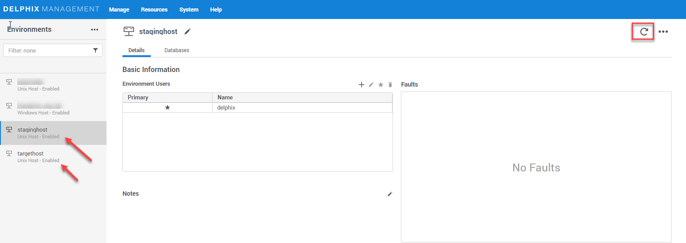

Discovery
Environment discovery is a process that enables the mongoDB Plugin to determine mongo installation details on a host. Whenever there is any changes (installing a new binary home) to an already set up environment in the Delphix application, environment refresh need to be performed.
Prerequisites
- Install delphix engine 6.0.7.x and above
- Install mongo binaries on staging and target servers
- Installation of the mongoDB Plugin is required before the discovery
- Environment variable
$MONGO_PATHshould be set on staging/target host using$HOME/.setDelphixMongoEnvandMONGO_REPO_CFGFILE, which contains binary path of mongo using below procedure.
Mongo Binaries Discovery
Mongo can be installed in different ways and so the path can vary in different environments. To discover correct binaries, follow steps as below
Steps:
-
Login to the Staging Host as delphix os user.
-
Create a file name “.setDelphixMongoEnv” in home directory of delphix user.
touch $HOME/.setDelphixMongoEnv -
Define variable pointing to config file for manual discovery of mongodb instances. Example as below.
echo "MONGO_REPO_CFGFILE=/home/delphix/.mongorepos.txt" > $HOME/.setDelphixMongoEnv -
Define full path to mongod binary in file represented by $MONGO_REPO_CFGFILE. Example as below.
source $HOME/.setDelphixMongoEnvecho "MONGO_PATH=/u01/mongodb428/bin/mongod" > $MONGO_REPO_CFGFILEIf there are multiple version binaries, specify each on separate lines as below
source $HOME/.setDelphixMongoEnvecho "MONGO_PATH=/u01/mongodb428/bin/mongod" > $MONGO_REPO_CFGFILEIf the MongoDB database tools are installed at different location, specify the MongoDB tools path on separate lines as belowecho "MONGO_PATH=/u01/mongodb509/bin/mongod" >> $MONGO_REPO_CFGFILEsource $HOME/.setDelphixMongoEnvecho "MONGO_PATH=/u01/mongodb428/bin/mongod:/u01/mongodb428/mongodb-database-tools/bin" > $MONGO_REPO_CFGFILEecho "MONGO_PATH=/u01/mongodb509/bin/mongod:/u01/mongodb509/mongodb-database-tools/bin" > $MONGO_REPO_CFGFILE -
Login to the Delphix Management application.
- Click Manage.
- Select Environments.
- In the Environments panel, click the name of the environment you want to refresh.
- Select the Refresh icon.
-
In the Refresh confirmation dialog select Refresh.

Sourceconfig
Every environment contains repositories and each environment may have any number of repositories associated with it. Repository represents the binaries for mongo instance. Each repository can have many SourceConfig which represent mongo instance. There is no sourceconfig generated automatically in mongo-plugin. We need to configure SourceConfig objects through which we can create a dSource.